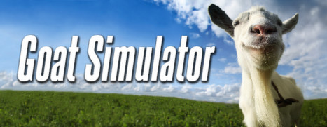
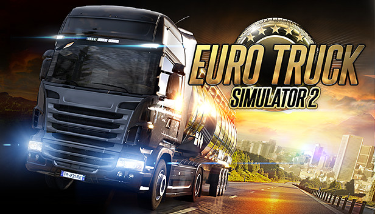
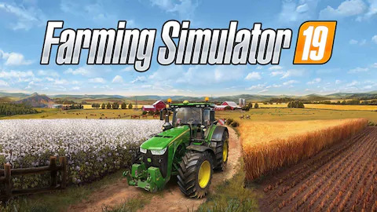

GryPC.PL
GryPC.PL
Simulations
Komputerowa gra symulacyjna, symulator – rodzaj gry komputerowej, której zadaniem jest imitacja wrażenia różnych doznań, jakie człowiek zaznaje w codziennej rzeczywistości. Występują np. symulatory lotu, symulacje wszelkich typów pojazdów lądowych, wodnych i powietrznych, pojazdów kosmicznych. Charakteryzują się tym, że ich twórcy dokładają wszelkich starań, aby jak najbardziej przypominały rzeczywistość lub kreowały rzeczywistość całkowicie odmienną od świata współczesnego (np. symulatory kosmiczne). Profesjonalne symulatory kabinowe wykorzystywane są do szkoleń jednostek specjalnych i pilotów.
Zaletą większości symulacji komputerowych jest fakt, że w ich tworzeniu pomagają specjaliści z dziedzin typowych dla danej symulacji, np. komandosi pomagają w opracowaniu gry symulującej pole walki, a aktywni piloci – symulacje lotu samolotami.
Jedną z nowych możliwości symulatorów jest symulowanie codziennego życia człowieka i jego zachowania w różnych okolicznościach, czego przykładem jest seria gier spod znaku The Sims bądź gry typu Tycoon
Zaletą większości symulacji komputerowych jest fakt, że w ich tworzeniu pomagają specjaliści z dziedzin typowych dla danej symulacji, np. komandosi pomagają w opracowaniu gry symulującej pole walki, a aktywni piloci – symulacje lotu samolotami.
Jedną z nowych możliwości symulatorów jest symulowanie codziennego życia człowieka i jego zachowania w różnych okolicznościach, czego przykładem jest seria gier spod znaku The Sims bądź gry typu Tycoon
Pare przykładów:

"Goat Simulator" to komputerowa gra symulacyjna, w której wcielamy się w kozę z widokiem z perspektywy trzeciej osoby, opracowana i wydana przez Coffee Stain Studios. Został wydany dla systemu Microsoft Windows w kwietniu 2014 r., A porty dla systemu Linux i OS X zostały wydane w czerwcu 2014 r. Wersje mobilne na Androida i iOS zostały wydane we wrześniu 2014 r. Wersje na konsole Xbox 360 i Xbox One zostały wydane w kwietniu 2015 r., A na PlayStation 3 i PlayStation 4 w sierpniu 2015; te porty zostały opracowane przez Double Eleven. Wersja na Nintendo Switch zawierająca grę i zawartość do pobrania została wydana w styczniu 2019 roku.
Gra została porównana przez dewelopera do gier deskorolkowych, ale w której gracz kontroluje kozę, której celem jest wyrządzenie jak największej liczby szkód na otwartej mapie świata, bez żadnych innych większych celów. Gra, początkowo opracowana jako prototyp żartu z wewnętrznego zacięcia gry i pokazana we wczesnej fazie alfa w filmach na YouTube, spotkała się z podekscytowaniem i uwagą, co skłoniło studio do zbudowania gry w stanie możliwym do wydania, zachowując jednocześnie różne niełamliwe. błędy i usterki mające na celu utrzymanie wartości rozrywkowej gry.
Gra otrzymała mieszane recenzje; niektórzy recenzenci chwalili tytuł za zapewnienie humorystycznego interfejsu piaskownicy do eksperymentowania, podczas gdy inni krytykowali poleganie gry na mediach społecznościowych w celu spopularyzowania tego, co poza tym było prostym i błędnym produktem.
Gra została porównana przez dewelopera do gier deskorolkowych, ale w której gracz kontroluje kozę, której celem jest wyrządzenie jak największej liczby szkód na otwartej mapie świata, bez żadnych innych większych celów. Gra, początkowo opracowana jako prototyp żartu z wewnętrznego zacięcia gry i pokazana we wczesnej fazie alfa w filmach na YouTube, spotkała się z podekscytowaniem i uwagą, co skłoniło studio do zbudowania gry w stanie możliwym do wydania, zachowując jednocześnie różne niełamliwe. błędy i usterki mające na celu utrzymanie wartości rozrywkowej gry.
Gra otrzymała mieszane recenzje; niektórzy recenzenci chwalili tytuł za zapewnienie humorystycznego interfejsu piaskownicy do eksperymentowania, podczas gdy inni krytykowali poleganie gry na mediach społecznościowych w celu spopularyzowania tego, co poza tym było prostym i błędnym produktem.

"Euro Truck Simulator 2" (w skrócie ETS 2) to komputerowa gra symulacyjna stworzona przez SCS Software będąca kontynuacją "Euro Truck Simulator". Wydana została przez firmę Rondomedia, a dystrybutorem w Polsce jest cdp.pl. Premiera gry odbyła się 19 października 2012 roku. Redaktor czasopisma "PC Gamer" przyznał grze nagrodę symulatora roku. 16 kwietnia 2013 ukazała się wersja beta na platformę Linux, a 29 stycznia 2015 wydano pełną wersję na system macOS.
W grze od razu można założyć własną firmę, ale zanim zacznie ona oficjalnie działać, powinno zdobyć się odpowiednią ilość pieniędzy na własną ciężarówkę oraz rozbudowanie garażu. W przeciwieństwie do Euro Truck Simulator gracz od początku może jeździć po całej Europie, zamiast odblokowywać kolejne kraje kontynentu, jak to miało miejsce w pierwszej części gry.
Głównym zadaniem gracza jest przetransportowanie określonego ładunku, który należy odebrać w danej firmie transportowej. Za wszelakie towary otrzymuje punkty doświadczenia (ich liczba zależna jest od stanu towaru, jego ważności, a także odległości, jaką przebył), przez co otrzymuje kolejne poziomy rozwoju kierowcy – za każdy kolejny poziom gracz otrzymuje jeden punkt specjalności do rozdania, dzięki czemu może otrzymywać różnego rodzaju ulepszenia.
Gracz ma możliwość zakupu nowych ciężarówek poprzez odkrywanie salonów samochodowych w miastach całej Europy. Istnieje również opcja tuningu, naprawy oraz malowania naszych pojazdów w stacjach naprawczych w każdym mieście. Podczas podróży można natrafić na stacje benzynowe w celu uzupełnienia paliwa oraz parkingi zlokalizowane wzdłuż autostrad, na przejściach granicznych oraz w motelach, aby zregenerować siły kierowcy. Do gry zostały dodane punkty poboru opłat, na których kierowca może zapłacić za przejechany odcinek autostrady m.in: w Polsce oraz we Francji. Od wersji 1.18.1 wszystkie ciągniki dostępne w grze są licencjonowane przez producentów.
W grze od razu można założyć własną firmę, ale zanim zacznie ona oficjalnie działać, powinno zdobyć się odpowiednią ilość pieniędzy na własną ciężarówkę oraz rozbudowanie garażu. W przeciwieństwie do Euro Truck Simulator gracz od początku może jeździć po całej Europie, zamiast odblokowywać kolejne kraje kontynentu, jak to miało miejsce w pierwszej części gry.
Głównym zadaniem gracza jest przetransportowanie określonego ładunku, który należy odebrać w danej firmie transportowej. Za wszelakie towary otrzymuje punkty doświadczenia (ich liczba zależna jest od stanu towaru, jego ważności, a także odległości, jaką przebył), przez co otrzymuje kolejne poziomy rozwoju kierowcy – za każdy kolejny poziom gracz otrzymuje jeden punkt specjalności do rozdania, dzięki czemu może otrzymywać różnego rodzaju ulepszenia.
Gracz ma możliwość zakupu nowych ciężarówek poprzez odkrywanie salonów samochodowych w miastach całej Europy. Istnieje również opcja tuningu, naprawy oraz malowania naszych pojazdów w stacjach naprawczych w każdym mieście. Podczas podróży można natrafić na stacje benzynowe w celu uzupełnienia paliwa oraz parkingi zlokalizowane wzdłuż autostrad, na przejściach granicznych oraz w motelach, aby zregenerować siły kierowcy. Do gry zostały dodane punkty poboru opłat, na których kierowca może zapłacić za przejechany odcinek autostrady m.in: w Polsce oraz we Francji. Od wersji 1.18.1 wszystkie ciągniki dostępne w grze są licencjonowane przez producentów.

"Farming Simulator" to komputerowa gra symulacyjna szwajcarskiej firmy Giants Software GmbH wydana po raz pierwszy w 2008 roku, będąca symulatorem pojazdów i maszyn rolniczych. Gra umożliwia prowadzenie gospodarstwa rolnego, w tym jazdę ciągnikiem rolniczym oraz wykonywanie prac rolniczych. Według danych producenta wersję gry z 2011 roku sprzedano w liczbie pół miliona egzemplarzy.
Otwarty silnik, na którym oparta jest produkcja, daje duże możliwości społeczności graczy, którzy tworzą dzięki temu nowe maszyny rolnicze dostosowując i całkowicie zmieniając otoczenie gry. Gra jest łatwa w moddingu, przez co gracze mogą tworzyć własne modyfikacje i dodawać je do gry. Symulator Farmy doczekał się wielu edycji, począwszy od wydanej 14 kwietnia 2008 wersji "Symulator Farmy 2008" stworzonej przez studio Giants Software, a kończąc na wydanej 20 listopada 2018 gry "Farming Simulator 2019". W 2010 roku dołączona została możliwość rozgrywki przez internet, a także hodowli zwierząt. "W Farming Simulator 2013" w ręce graczy została oddana możliwość gry na serwerach dedykowanych utrzymywanych przez zewnętrzne firmy – projekt ten był całkowicie sfinansowany przez społeczność. W "Farming Simulator 17" do dyspozycji oddano kilkaset pojazdów i narzędzi, w tym 75 licencjonowanych marek.
Pierwszym polskim oficjalnym dystrybutorem została wrocławska firma Techland. Najnowszą odsłonę promował już CD Projekt nie pod nazwą "Symulator Farmy 2013", a "Farming Simulator 2013". Z inicjatywy obecnego polskiego dystrybutora pojawiła się specjalna edycja pod tytułem "Farming Simulator 2013": Edycja Ursus, która swoją premierę miała 5 maja 2013. Najnowszy pakiet DLC pojawił się na początku października 2013 roku pod nazwą "Farming Simulator 2013 Titanium", który to wprowadza klimat stylizowany na charakterystykę gospodarstw rolnych Stanów Zjednoczonych. Od 4 września 2013 gra dostępna jest na takie platformy jak Xbox 360 czy PS3.
Otwarty silnik, na którym oparta jest produkcja, daje duże możliwości społeczności graczy, którzy tworzą dzięki temu nowe maszyny rolnicze dostosowując i całkowicie zmieniając otoczenie gry. Gra jest łatwa w moddingu, przez co gracze mogą tworzyć własne modyfikacje i dodawać je do gry. Symulator Farmy doczekał się wielu edycji, począwszy od wydanej 14 kwietnia 2008 wersji "Symulator Farmy 2008" stworzonej przez studio Giants Software, a kończąc na wydanej 20 listopada 2018 gry "Farming Simulator 2019". W 2010 roku dołączona została możliwość rozgrywki przez internet, a także hodowli zwierząt. "W Farming Simulator 2013" w ręce graczy została oddana możliwość gry na serwerach dedykowanych utrzymywanych przez zewnętrzne firmy – projekt ten był całkowicie sfinansowany przez społeczność. W "Farming Simulator 17" do dyspozycji oddano kilkaset pojazdów i narzędzi, w tym 75 licencjonowanych marek.
Pierwszym polskim oficjalnym dystrybutorem została wrocławska firma Techland. Najnowszą odsłonę promował już CD Projekt nie pod nazwą "Symulator Farmy 2013", a "Farming Simulator 2013". Z inicjatywy obecnego polskiego dystrybutora pojawiła się specjalna edycja pod tytułem "Farming Simulator 2013": Edycja Ursus, która swoją premierę miała 5 maja 2013. Najnowszy pakiet DLC pojawił się na początku października 2013 roku pod nazwą "Farming Simulator 2013 Titanium", który to wprowadza klimat stylizowany na charakterystykę gospodarstw rolnych Stanów Zjednoczonych. Od 4 września 2013 gra dostępna jest na takie platformy jak Xbox 360 czy PS3.